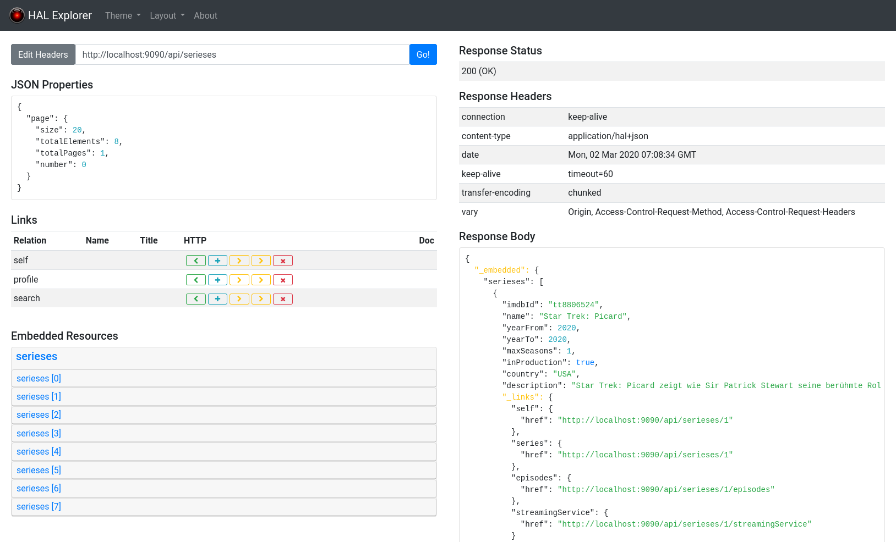
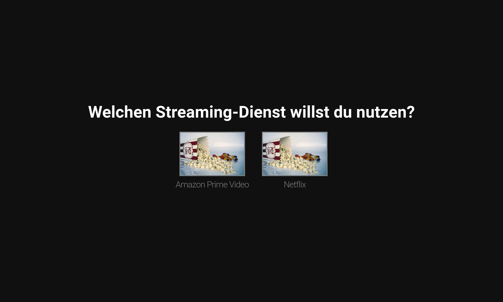
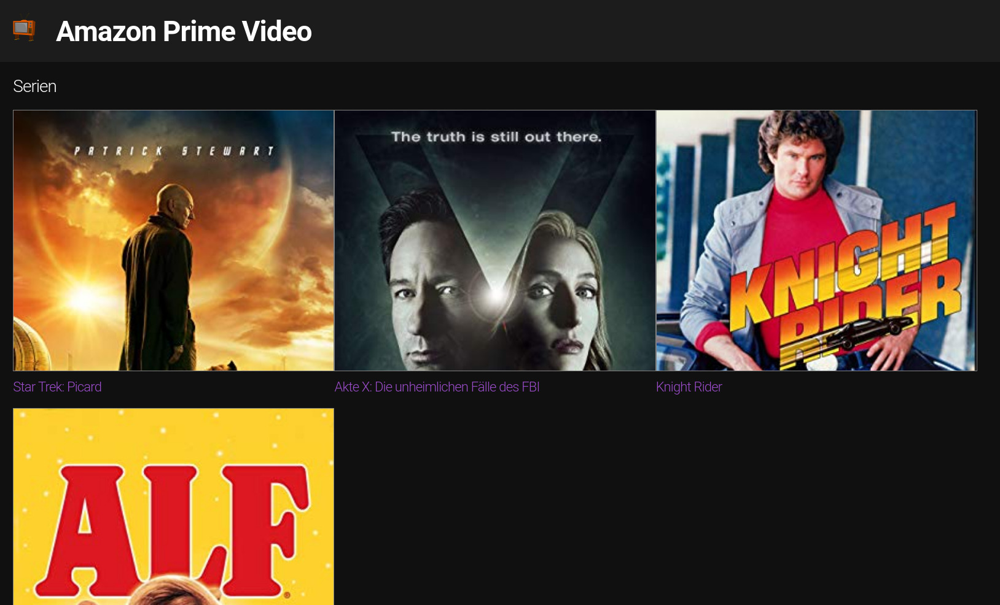
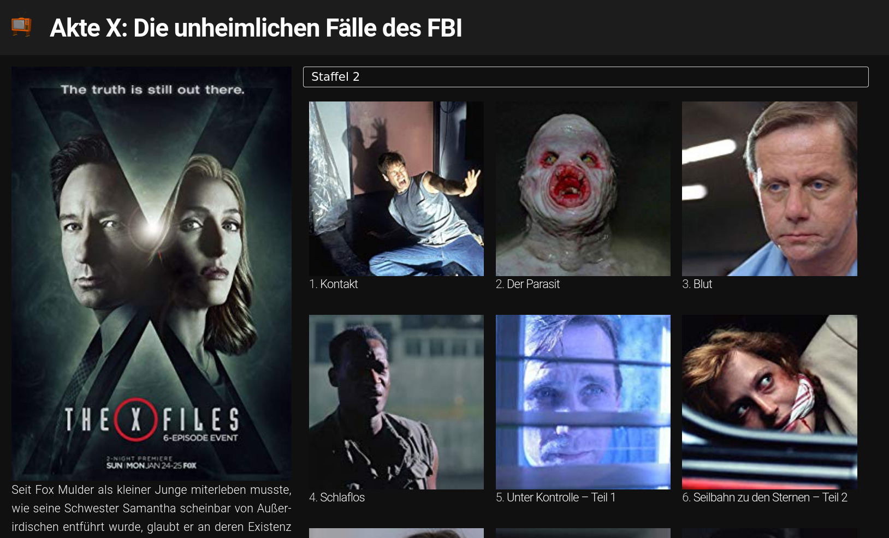

Alle meine Stromkreise ist der Name einer beliebten Daily Soap aus Futurama mit der berühmten Schauspieleinheit Calculon (in der heutigen Zeit eher bekannt als David Duchovny aus Akte X oder Californication) in der Hauptrolle. Leider wird die Serie erst ab dem Jahr 3000 ausgestrahlt, so dass wir uns bis dahin mit dem Fernsehprogramm der heutigen Zeit begnügen müssen. Doch auch heute gibt es ja genügend gute Serien, mit denen man sich die ein oder andere Nacht um die Ohren schlagen kann. 🛋️ In dieser Aufgabe soll es deshalb darum gehen, eine kleine Datenbank zur Verwaltung unserer Lieblingsserien zu programmieren.
|  |  |
|  |  |
1) Zunächst soll in Spring ein Backsendservice programmiert werden, der es ermöglicht, über einen REST-Webservice auf die Daten der Anwendung zuzugreifen. Hierfür soll auf start.spring.io ein Springboot-Projekt mit folgenden Komponenten angelegt werden:
2) Die Anwendung soll, wie in den Folien gezeigt, über die Datei applications.properties so konfiguriert werden, dass der REST-Webservice unter der Adresse http://localhost:8080/api aufrufbar ist. Folgendes Datenmodell soll implementiert werden:
Zu jeder Entität sind geeignete Attribute wie zum Beispiel der Name der Serie, Studio, Jahr der Erstausstrahlung und so weiter zu definieren. Beachte dabei, dass es mehrere Möglichkeiten gibt, die Daten zu modellieren, von denen keine notwendigerweise besser als die andere sein muss.
3) Sorge dafür, dass, wie in den Folien gezeigt, mit einem im Quellcode hinterlegten SQL-Skript automatisch Testdaten angelegt werden.
4) Teste den Webserivce mit der eingebauten Weboberfläche oder mit Postman 📨, um zu zeigen, dass er funktioniert. Der Test soll mit Screenshots dokumentiert werden.
Im nächsten Schritt soll eine kleine Webanwendung zum Aufruf des Webservices entwickelt werden. Die Anwendung muss nicht so ausgefeilt wie in den Screenshots sein. Im Gegenteil: Ein kleiner Proof of Concept 📝 reicht bereits völlig aus. Jedoch sollte die Webanwendung zeigen, wie die Verfügbaren Streaming-Dienste sowie für einen Streaming-Dienst die verfügbaren Serien und zu einer Serie die verfügbaren Episoden abgerufen und dargestellt werden können.
Die Webanwendung kann der Einfachheit halber im static-Verzeichnis des Java-Projekts angelegt werden.
Folgende Extras sind freiwillig, werten die Lösung aber nochmal deutlich auf: 💯
Die Char-Felder im Datenmodell werden in Java als ganz normale String-Felder definiert. Mit der Annotation @Column(length = ...) kann deren technische Länge in der Datenbank begrenzt werden.
Einfache Fremdschlüsselbeziehungen können in Java wie folgt definiert werden:
@Entity
@Data
public class Series implements Serializable {
...
@ManyToOne
private StreamingService streamingService = null;
}
@Entity
@Data
public class StreamingService implements Serializable {
...
}Wahlweise kann die Beziehung auch bidirektional definiert werden, wodurch der Webservice später eine Navigation in beide Richtungen erlauben wird:
@Entity
@Data
public class Series implements Serializable {
...
@ManyToOne
private StreamingService streamingService = null;
}
@Entity
@Data
public class StreamingService implements Serializable {
...
@OneToMany(mapped_by = "streamingService")
List<Series> serieses = new ArrayList<>();
}Die IMDB-ID für Serien und Episoden wird benötigt, um in der Bonusaufgabe Bilder von IMDB abrufen zu können. Sie entspricht dem unten rot unterstrichenen Teil der IMDB-URL, wenn man dort eine Serie oder Episode aufruft: